Concepción
«La vida, o es una aventura o no es nada»

«La vida, o es una aventura o no es nada»
Hoy estuvimos en uno de los municipios de mayor historia de nuestro departamento, cuna de
nuestro prócer José María Córdova también apodado como "El Héroe de
Ayacucho", un
pueblito de antaño, atrapado
en el tiempo, con sus calles empedradas y estrechas, casonas coloniales forjadas en bahareque y
madera,
vestigio
de una época de mayor esplendor que se rehúsa a quedar en el olvido. Fundado en 1771 por mineros
provenientes
de Santa Fe de Antioquia y erigido municipio en 1773, conformado por 24 veredas y tan sólo 4750
habitantes, según datos
del último censo. Concepción también llamada "La Concha", un terruño
bordeado por
lindos prados, de calles limpias y vacías,
con gran variedad de oferta gastronómica y hotelera.
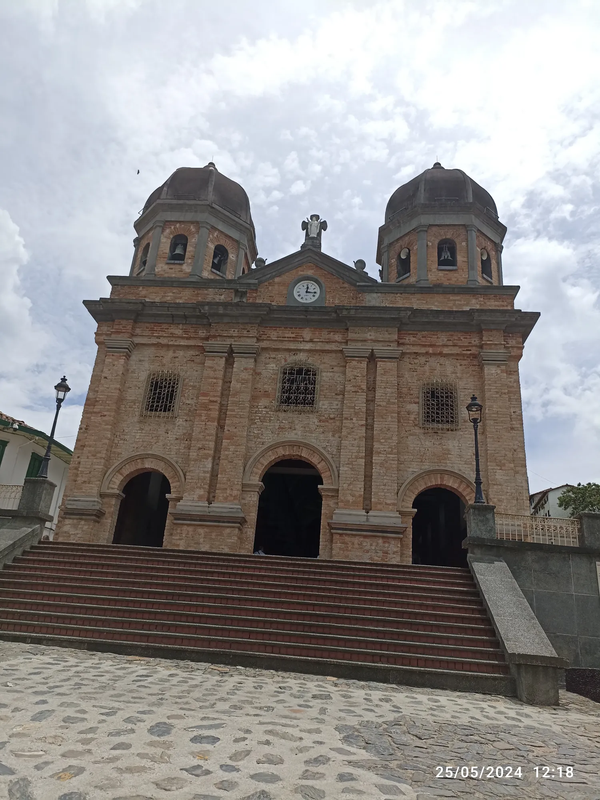
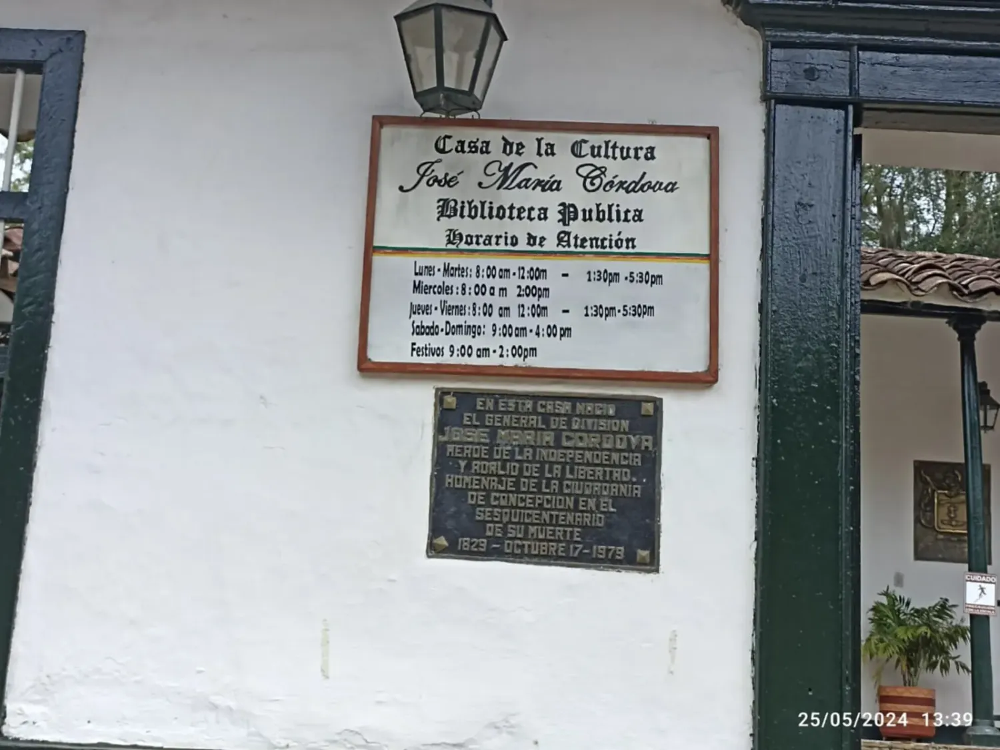
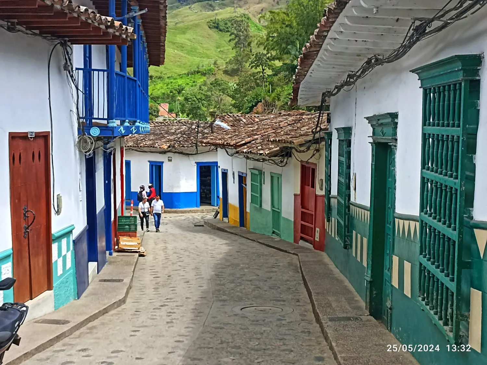
Concepción es un pueblito resiliente que florece a pesar de las adversidades, una población disminuida fruto de la cruenta guerra entre paramilitares y guerrilla que se turnaban las Masacres en la década de los 90 e inicios del 2000, lo que ocasionó densos desplazamientos hacia la capital antioqueña.
En el parque del pueblo hay un busto de su hijo más notable, rodeado de un hermoso jardín,
y también esta Laura, hija también de esta tierra, una niña entrañable que nos da la bienvenida
con un carisma arrollador, guía turístico, cuentera, gestora cultural, historiadora, que nos ofrece
unas
hermosas
postales mientras nos relata que después de terminar su ciclo universitario en la ciudad de Medellín
sintió el llamado
de la tierrita y se regresó, y aquí está con su emprendimiento, si tienen la oportunidad de ir a
este
hermoso
municipio, no duden en gastarle, es toda una experiencia oírla hablar.
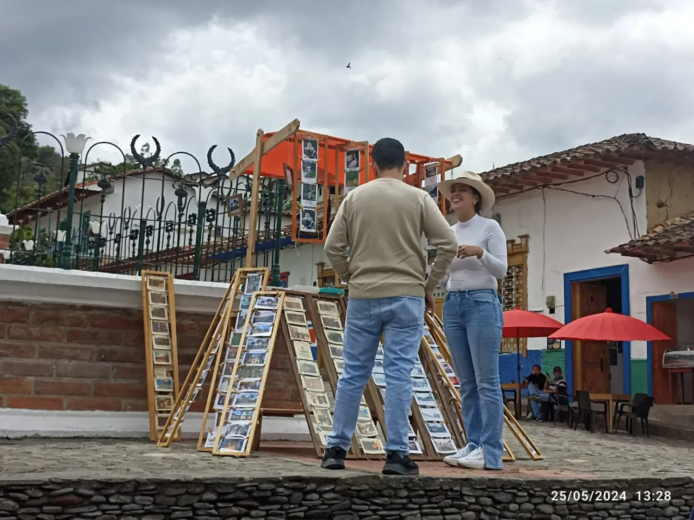
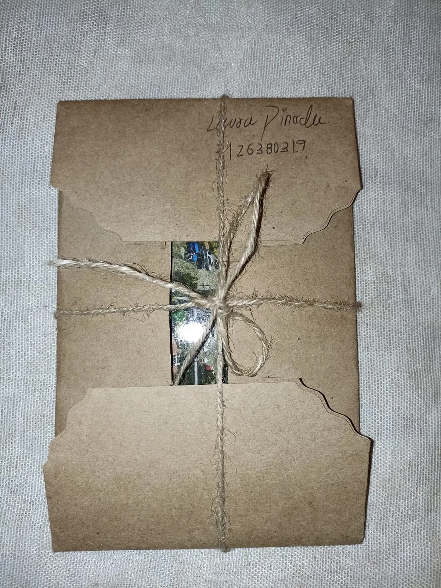
Y como si contemplar la belleza en cada rincón donde se pose la vista no fuera suficiente, en un costado del pueblo se eleva un pequeño mirador, coronado por una imagen de la virgen María Inmaculada que se accede por una escalinata descansada y amplia, que nos regala una extensa vista del casco urbano.
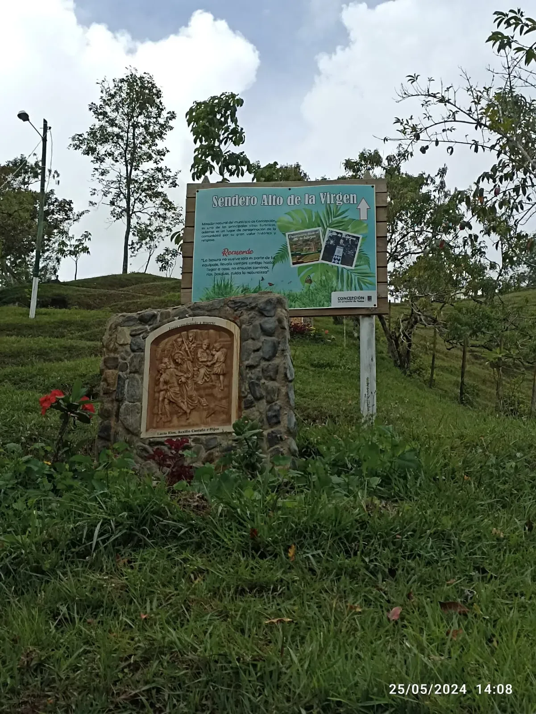
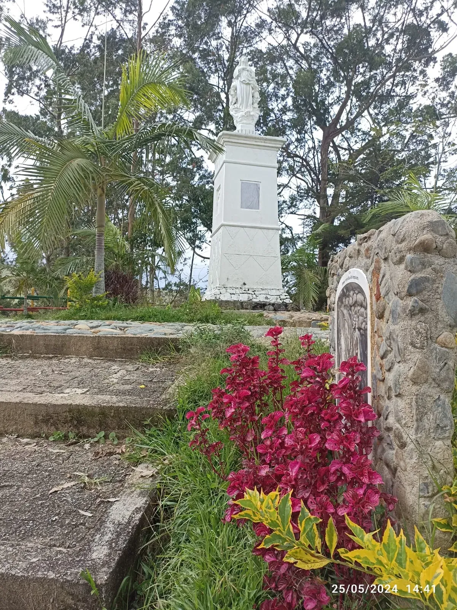
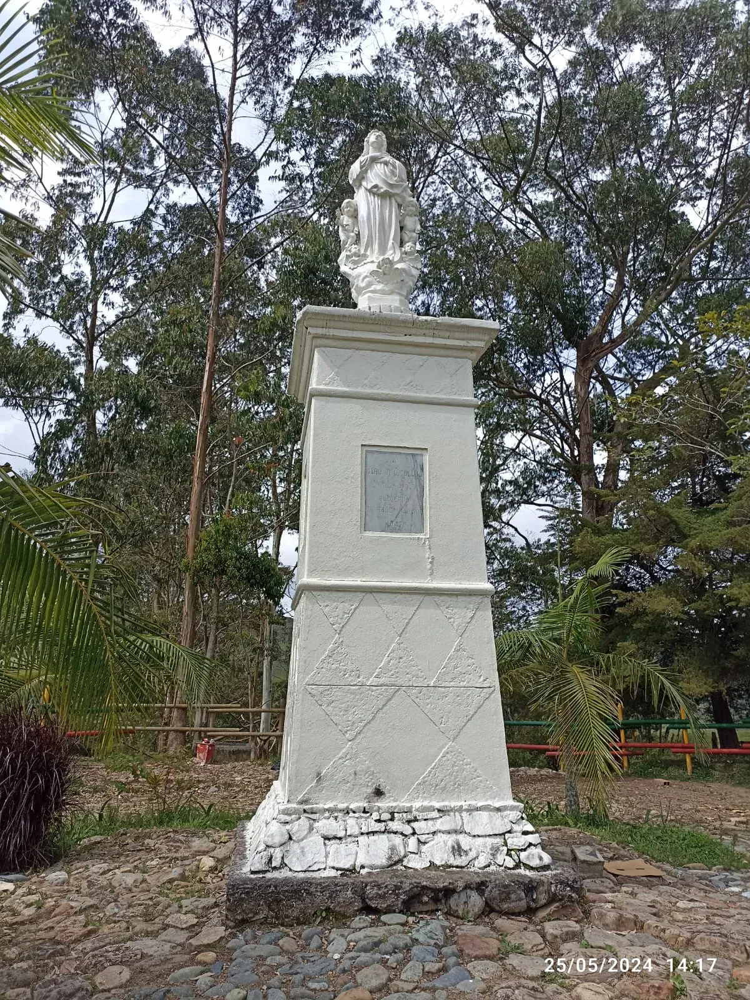
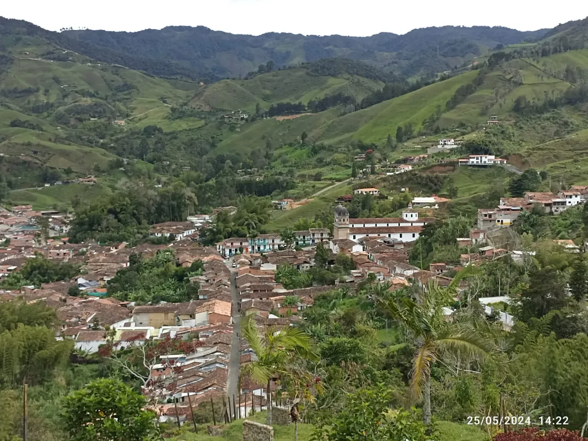
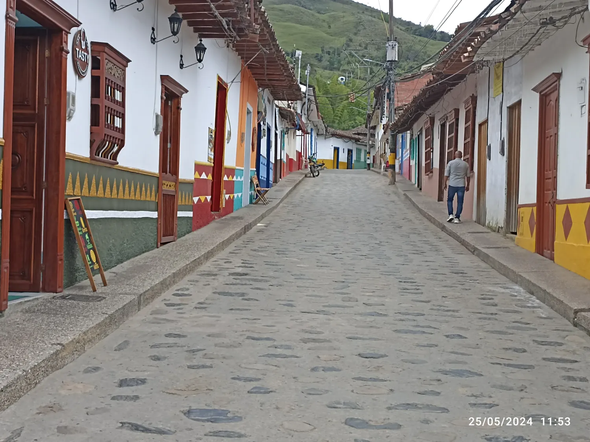
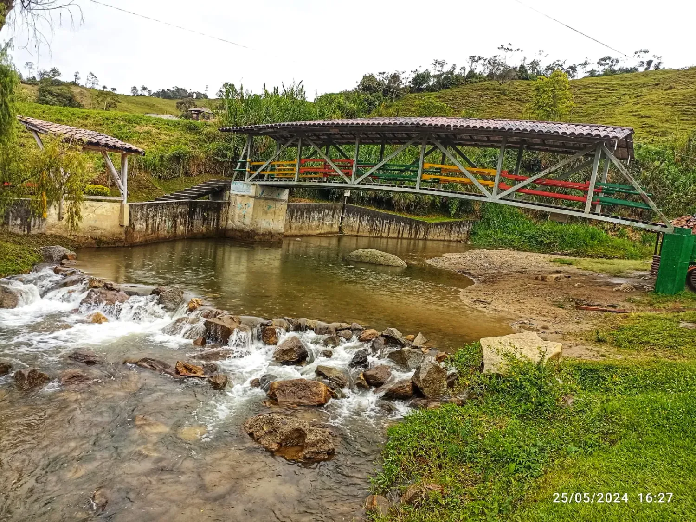